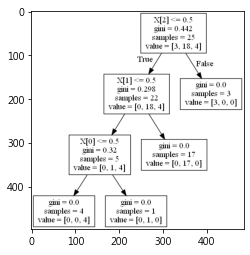

import numpy as np
import matplotlib.pyplot as plt
import matplotlib.colors as mcolors
import pandas as pd
df=pd.read_csv('./32taipeislopehouse.csv', encoding='cp950')
df
---------------------------------------------------------------------------
FileNotFoundError Traceback (most recent call last)
<ipython-input-1-d02e9cb5a7c3> in <module>
3 import matplotlib.colors as mcolors
4 import pandas as pd
----> 5 df=pd.read_csv('./32taipeislopehouse.csv', encoding='cp950')
6 df
C:\ProgramData\Anaconda3\lib\site-packages\pandas\io\parsers.py in read_csv(filepath_or_buffer, sep, delimiter, header, names, index_col, usecols, squeeze, prefix, mangle_dupe_cols, dtype, engine, converters, true_values, false_values, skipinitialspace, skiprows, skipfooter, nrows, na_values, keep_default_na, na_filter, verbose, skip_blank_lines, parse_dates, infer_datetime_format, keep_date_col, date_parser, dayfirst, cache_dates, iterator, chunksize, compression, thousands, decimal, lineterminator, quotechar, quoting, doublequote, escapechar, comment, encoding, dialect, error_bad_lines, warn_bad_lines, delim_whitespace, low_memory, memory_map, float_precision, storage_options)
608 kwds.update(kwds_defaults)
609
--> 610 return _read(filepath_or_buffer, kwds)
611
612
C:\ProgramData\Anaconda3\lib\site-packages\pandas\io\parsers.py in _read(filepath_or_buffer, kwds)
460
461 # Create the parser.
--> 462 parser = TextFileReader(filepath_or_buffer, **kwds)
463
464 if chunksize or iterator:
C:\ProgramData\Anaconda3\lib\site-packages\pandas\io\parsers.py in __init__(self, f, engine, **kwds)
817 self.options["has_index_names"] = kwds["has_index_names"]
818
--> 819 self._engine = self._make_engine(self.engine)
820
821 def close(self):
C:\ProgramData\Anaconda3\lib\site-packages\pandas\io\parsers.py in _make_engine(self, engine)
1048 )
1049 # error: Too many arguments for "ParserBase"
-> 1050 return mapping[engine](self.f, **self.options) # type: ignore[call-arg]
1051
1052 def _failover_to_python(self):
C:\ProgramData\Anaconda3\lib\site-packages\pandas\io\parsers.py in __init__(self, src, **kwds)
1865
1866 # open handles
-> 1867 self._open_handles(src, kwds)
1868 assert self.handles is not None
1869 for key in ("storage_options", "encoding", "memory_map", "compression"):
C:\ProgramData\Anaconda3\lib\site-packages\pandas\io\parsers.py in _open_handles(self, src, kwds)
1360 Let the readers open IOHanldes after they are done with their potential raises.
1361 """
-> 1362 self.handles = get_handle(
1363 src,
1364 "r",
C:\ProgramData\Anaconda3\lib\site-packages\pandas\io\common.py in get_handle(path_or_buf, mode, encoding, compression, memory_map, is_text, errors, storage_options)
640 errors = "replace"
641 # Encoding
--> 642 handle = open(
643 handle,
644 ioargs.mode,
FileNotFoundError: [Errno 2] No such file or directory: './32taipeislopehouse.csv'
df = df.drop(['Unnamed: 14','Unnamed: 15','Unnamed: 16','Unnamed: 17','Unnamed: 18','Unnamed: 19'], axis=1)
df
| NO. | AREA | LOU | DOWN | Buildingnumber | households | persons | coordinates | historicaldisaster | disaster | monitoring | abnormal | downhillslope | sensitivearea | |
|---|---|---|---|---|---|---|---|---|---|---|---|---|---|---|
| 0 | 1.0 | 信義 | 松山路底福德街51巷山坡聚落 | 0.0 | 46 | 65 | 170 | 25.03609668126509, 121.5810781427746 | 1.0 | 局部崩塌 | 1.0 | 1.0 | 0.0 | 1.0 |
| 1 | 2.0 | 信義 | 松山路650巷15弄南側山坡聚落 | 0.0 | 119 | 209 | 597 | 25.031817344534005, 121.57937424004398 | 1.0 | 土石流潛勢溪流谷口地帶 | 1.0 | 1.0 | 0.0 | 1.0 |
| 2 | 3.0 | 信義 | 和平東路三段435巷29弄山坡聚落 | 1.0 | 59 | 1 | 4 | 25.020975499642187, 121.56063729066821 | 1.0 | 局部崩塌 | 1.0 | 0.0 | 0.0 | 0.0 |
| 3 | 4.0 | 信義 | 虎林街272巷山坡聚落 | 1.0 | 55 | 12 | 29 | 25.034635668103316, 121.57847009052146 | 1.0 | 1.106年虎林街272巷2-46號前下陷\n2.105年虎林街272巷2-18號地質掏空\... | 1.0 | 0.0 | 0.0 | 0.0 |
| 4 | 5.0 | 信義 | 臥龍街427巷及395巷23弄附近山坡聚落 | 1.0 | 77 | 5 | 16 | 25.016623886721, 121.56179106018914 | 1.0 | 無 | 1.0 | 0.0 | 1.0 | 1.0 |
| 5 | 6.0 | 信義 | 臥龍街427巷及395巷23弄附近山坡聚落 | 1.0 | 61 | 3 | 6 | 25.012950344387896, 121.56562655764826 | 1.0 | 1.109年和平東路三段627巷65號後方樓梯下掏空\n2.106年和平東路三段627巷21... | 1.0 | 0.0 | 1.0 | 1.0 |
| 6 | 7.0 | 信義 | 臥龍街427巷5弄南側至427巷6,7弄間山坡聚落 | 1.0 | 72 | 72 | 194 | 25.01225331292925, 121.56454555998302 | 0.0 | NaN | 1.0 | 0.0 | 1.0 | 1.0 |
| 7 | 8.0 | 信義 | 吳興街底靠山腳及坑溝之山坡聚落 | 1.0 | 23 | 7 | 24 | 25.016733235216986, 121.57161776252829 | 1.0 | 1.102年吳興街600巷98弄20-1號邊坡崩塌 | 0.0 | 0.0 | 0.0 | 0.0 |
| 8 | 32.0 | 信義 | 吳興街583巷117弄山坡聚落 | 0.0 | 33 | 38 | 114 | NaN | 0.0 | NaN | 1.0 | 1.0 | 1.0 | 1.0 |
| 9 | 9.0 | 信義 | 聯勤技術訓練中心左側兩系谷溝沿線舊山坡聚落 | 1.0 | 29 | 20 | 69 | 25.021978697620295, 121.57858621443063 | 1.0 | 1.106年信義路五段150巷485-3號旁掏空處理 | 1.0 | 0.0 | 0.0 | 0.0 |
| 10 | 10.0 | 北投 | 貴子坑溪水磨坑溪匯流口上游山坡聚落 | 1.0 | 83 | 44 | 151 | 25.14933972649104, 121.49376075861636 | 0.0 | NaN | 1.0 | 0.0 | 0.0 | 1.0 |
| 11 | 11.0 | 北投 | 幽雅路杏林巷曹洞寺附近山坡聚落 | 1.0 | 26 | 19 | 51 | 25.153345362633168, 121.49029958358798 | 0.0 | NaN | 1.0 | 0.0 | 0.0 | 0.0 |
| 12 | 12.0 | 士林 | 中社路1段9巷翠山莊 | 2.0 | 16 | 33 | 33 | NaN | 0.0 | NaN | 0.0 | 0.0 | 0.0 | 0.0 |
| 13 | 13.0 | 士林 | 臨溪路74巷及100巷山坡聚落 | 1.0 | 30 | 26 | 74 | 25.0948594799836, 121.54945554947682 | 0.0 | NaN | 1.0 | 0.0 | 0.0 | 0.0 |
| 14 | 14.0 | 士林 | 仰德大道復興橋山坡聚落 | 2.0 | 107 | 277 | 277 | NaN | 0.0 | NaN | 0.0 | 0.0 | 0.0 | 0.0 |
| 15 | 15.0 | 士林 | 中山北路5段復興電台後方山坡聚落 | 1.0 | 43 | 21 | 71 | 25.153345362633168, 121.49029958358798 | 0.0 | NaN | 1.0 | 0.0 | 0.0 | 0.0 |
| 16 | 16.0 | 大安 | 臥龍街426巷及臥龍街380至418號山坡聚落 | 1.0 | 40 | 17 | 55 | 25.014207804181172, 121.56211206274585 | 1.0 | 1.109年和平東路三段576號民宅後方土石崩落\n2.108年和平東路三段606巷5號下邊坡崩塌 | 1.0 | 0.0 | 1.0 | 1.0 |
| 17 | 17.0 | 大安 | 臥龍街436巷捷運線東側山坡聚落 | 1.0 | 52 | 57 | 145 | 25.011734855364086, 121.5610626244035 | 0.0 | NaN | 1.0 | 0.0 | 0.0 | 0.0 |
| 18 | 18.0 | 大安 | 臥龍街436巷捷運線西側山坡聚落 | 1.0 | 30 | 4 | 14 | 25.013119504883623, 121.56006477310991 | 0.0 | NaN | 1.0 | 0.0 | 0.0 | 0.0 |
| 19 | 19.0 | 中山 | 北安路501巷、689巷及自強隧道南洞口東側雞南山沿山腳一帶山坡聚落 | 0.0 | 216 | 277 | 908 | 25.086466787516127, 121.55128539362478 | 1.0 | 1.局部崩塌/土石流潛勢溪流谷口地帶\n2.82年05月30日瑞伯颱風 土石流 | 1.0 | 1.0 | 0.0 | 1.0 |
| 20 | 20.0 | 中山 | 通北街118巷及146巷山坡聚落 | 1.0 | 114 | 18 | 39 | 25.084939946055922, 121.53619955146205 | 1.0 | 1.109年通北街118巷42弄22號後方土方崩落\n2.106年通北街118巷68弄28-... | 1.0 | 0.0 | 0.0 | 0.0 |
| 21 | 21.0 | 內湖 | 內湖路一段47巷西側及內湖路一段39巷東側(靠劍南路下方)山坡聚落 | 1.0 | 49 | 16 | 29 | 25.08742593957845, 121.55832221721033 | 0.0 | NaN | 1.0 | 0.0 | 1.0 | 1.0 |
| 22 | 22.0 | 文山 | 景興路仙跡岩下方紫範宮一帶山坡聚落 | 1.0 | 64 | 19 | 56 | 24.99031931127121, 121.54336464150221 | 1.0 | 1.107年景興路275巷16號住宅後方落石 | 1.0 | 0.0 | 0.0 | 0.0 |
| 23 | 23.0 | 南港 | 中南街134巷及168巷一帶山坡聚落 | 1.0 | 56 | 47 | 47 | 25.051977449090458, 121.61336417938861 | 1.0 | 1.109年中南街168巷1號後側邊坡土石滑落 | 1.0 | 0.0 | 0.0 | 0.0 |
| 24 | 24.0 | 南港 | 舊莊街2段156號後側﹑160號附近及306巷1號山坡聚落 | 1.0 | 53 | 29 | 109 | 25.034864242598374, 121.62883193930624 | 0.0 | NaN | 1.0 | 0.0 | 0.0 | 0.0 |
| 25 | 25.0 | 大安 | 臥龍街379巷對面山坡聚落 | 1.0 | 54 | 17 | 37 | 25.014964946431885, 121.56005927705192 | 0.0 | NaN | 1.0 | 0.0 | 1.0 | 1.0 |
| 26 | 26.0 | 文山 | 木柵路5段象頭埔山坡聚落 | 1.0 | 21 | 47 | 59 | 25.0019002891185, 121.58995532716162 | 0.0 | NaN | 1.0 | 0.0 | 1.0 | 1.0 |
| 27 | 27.0 | 信義 | 信義路5段150巷342弄東側(慈惠堂)附近山坡聚落 | 1.0 | 75 | 14 | 42 | 25.02573281716433, 121.57251946139283 | 1.0 | 1.109年信義路五段150巷50號後方山坡地土石滑落 | 1.0 | 0.0 | 0.0 | 0.0 |
| 28 | 28.0 | 信義 | 吳興街600巷55弄對面山坡聚落 | 2.0 | 11 | 47 | 47 | 25.01993731531472, 121.57104312690147 | 0.0 | NaN | 0.0 | 0.0 | 0.0 | 0.0 |
| 29 | 29.0 | 南港 | 研究院路4段下寮橋北側山坡聚落 | 2.0 | 21 | 47 | 47 | 25.01950913188209, 121.59439344672515 | 0.0 | NaN | 0.0 | 0.0 | 0.0 | 0.0 |
| 30 | 30.0 | 南港 | 成福路底北興宮附近山坡聚落 | 1.0 | 17 | 33 | 33 | 25.03666035870078, 121.59061430049454 | 0.0 | NaN | 1.0 | 0.0 | 0.0 | 0.0 |
| 31 | 31.0 | 大安 | 基隆路3段155巷176弄東側山坡聚落 | 1.0 | 137 | 57 | 130 | 25.012961100282865, 121.54855758180983 | 0.0 | NaN | 1.0 | 0.0 | 0.0 | 0.0 |
| 32 | NaN | NaN | NaN | NaN | 1889 | 1598 | 3677 | NaN | NaN | NaN | NaN | NaN | NaN | NaN |
df = df.drop(['disaster'], axis=1)
df
| NO. | AREA | LOU | DOWN | Buildingnumber | households | persons | coordinates | historicaldisaster | monitoring | abnormal | downhillslope | sensitivearea | |
|---|---|---|---|---|---|---|---|---|---|---|---|---|---|
| 0 | 1.0 | 信義 | 松山路底福德街51巷山坡聚落 | 0.0 | 46 | 65 | 170 | 25.03609668126509, 121.5810781427746 | 1.0 | 1.0 | 1.0 | 0.0 | 1.0 |
| 1 | 2.0 | 信義 | 松山路650巷15弄南側山坡聚落 | 0.0 | 119 | 209 | 597 | 25.031817344534005, 121.57937424004398 | 1.0 | 1.0 | 1.0 | 0.0 | 1.0 |
| 2 | 3.0 | 信義 | 和平東路三段435巷29弄山坡聚落 | 1.0 | 59 | 1 | 4 | 25.020975499642187, 121.56063729066821 | 1.0 | 1.0 | 0.0 | 0.0 | 0.0 |
| 3 | 4.0 | 信義 | 虎林街272巷山坡聚落 | 1.0 | 55 | 12 | 29 | 25.034635668103316, 121.57847009052146 | 1.0 | 1.0 | 0.0 | 0.0 | 0.0 |
| 4 | 5.0 | 信義 | 臥龍街427巷及395巷23弄附近山坡聚落 | 1.0 | 77 | 5 | 16 | 25.016623886721, 121.56179106018914 | 1.0 | 1.0 | 0.0 | 1.0 | 1.0 |
| 5 | 6.0 | 信義 | 臥龍街427巷及395巷23弄附近山坡聚落 | 1.0 | 61 | 3 | 6 | 25.012950344387896, 121.56562655764826 | 1.0 | 1.0 | 0.0 | 1.0 | 1.0 |
| 6 | 7.0 | 信義 | 臥龍街427巷5弄南側至427巷6,7弄間山坡聚落 | 1.0 | 72 | 72 | 194 | 25.01225331292925, 121.56454555998302 | 0.0 | 1.0 | 0.0 | 1.0 | 1.0 |
| 7 | 8.0 | 信義 | 吳興街底靠山腳及坑溝之山坡聚落 | 1.0 | 23 | 7 | 24 | 25.016733235216986, 121.57161776252829 | 1.0 | 0.0 | 0.0 | 0.0 | 0.0 |
| 8 | 32.0 | 信義 | 吳興街583巷117弄山坡聚落 | 0.0 | 33 | 38 | 114 | NaN | 0.0 | 1.0 | 1.0 | 1.0 | 1.0 |
| 9 | 9.0 | 信義 | 聯勤技術訓練中心左側兩系谷溝沿線舊山坡聚落 | 1.0 | 29 | 20 | 69 | 25.021978697620295, 121.57858621443063 | 1.0 | 1.0 | 0.0 | 0.0 | 0.0 |
| 10 | 10.0 | 北投 | 貴子坑溪水磨坑溪匯流口上游山坡聚落 | 1.0 | 83 | 44 | 151 | 25.14933972649104, 121.49376075861636 | 0.0 | 1.0 | 0.0 | 0.0 | 1.0 |
| 11 | 11.0 | 北投 | 幽雅路杏林巷曹洞寺附近山坡聚落 | 1.0 | 26 | 19 | 51 | 25.153345362633168, 121.49029958358798 | 0.0 | 1.0 | 0.0 | 0.0 | 0.0 |
| 12 | 12.0 | 士林 | 中社路1段9巷翠山莊 | 2.0 | 16 | 33 | 33 | NaN | 0.0 | 0.0 | 0.0 | 0.0 | 0.0 |
| 13 | 13.0 | 士林 | 臨溪路74巷及100巷山坡聚落 | 1.0 | 30 | 26 | 74 | 25.0948594799836, 121.54945554947682 | 0.0 | 1.0 | 0.0 | 0.0 | 0.0 |
| 14 | 14.0 | 士林 | 仰德大道復興橋山坡聚落 | 2.0 | 107 | 277 | 277 | NaN | 0.0 | 0.0 | 0.0 | 0.0 | 0.0 |
| 15 | 15.0 | 士林 | 中山北路5段復興電台後方山坡聚落 | 1.0 | 43 | 21 | 71 | 25.153345362633168, 121.49029958358798 | 0.0 | 1.0 | 0.0 | 0.0 | 0.0 |
| 16 | 16.0 | 大安 | 臥龍街426巷及臥龍街380至418號山坡聚落 | 1.0 | 40 | 17 | 55 | 25.014207804181172, 121.56211206274585 | 1.0 | 1.0 | 0.0 | 1.0 | 1.0 |
| 17 | 17.0 | 大安 | 臥龍街436巷捷運線東側山坡聚落 | 1.0 | 52 | 57 | 145 | 25.011734855364086, 121.5610626244035 | 0.0 | 1.0 | 0.0 | 0.0 | 0.0 |
| 18 | 18.0 | 大安 | 臥龍街436巷捷運線西側山坡聚落 | 1.0 | 30 | 4 | 14 | 25.013119504883623, 121.56006477310991 | 0.0 | 1.0 | 0.0 | 0.0 | 0.0 |
| 19 | 19.0 | 中山 | 北安路501巷、689巷及自強隧道南洞口東側雞南山沿山腳一帶山坡聚落 | 0.0 | 216 | 277 | 908 | 25.086466787516127, 121.55128539362478 | 1.0 | 1.0 | 1.0 | 0.0 | 1.0 |
| 20 | 20.0 | 中山 | 通北街118巷及146巷山坡聚落 | 1.0 | 114 | 18 | 39 | 25.084939946055922, 121.53619955146205 | 1.0 | 1.0 | 0.0 | 0.0 | 0.0 |
| 21 | 21.0 | 內湖 | 內湖路一段47巷西側及內湖路一段39巷東側(靠劍南路下方)山坡聚落 | 1.0 | 49 | 16 | 29 | 25.08742593957845, 121.55832221721033 | 0.0 | 1.0 | 0.0 | 1.0 | 1.0 |
| 22 | 22.0 | 文山 | 景興路仙跡岩下方紫範宮一帶山坡聚落 | 1.0 | 64 | 19 | 56 | 24.99031931127121, 121.54336464150221 | 1.0 | 1.0 | 0.0 | 0.0 | 0.0 |
| 23 | 23.0 | 南港 | 中南街134巷及168巷一帶山坡聚落 | 1.0 | 56 | 47 | 47 | 25.051977449090458, 121.61336417938861 | 1.0 | 1.0 | 0.0 | 0.0 | 0.0 |
| 24 | 24.0 | 南港 | 舊莊街2段156號後側﹑160號附近及306巷1號山坡聚落 | 1.0 | 53 | 29 | 109 | 25.034864242598374, 121.62883193930624 | 0.0 | 1.0 | 0.0 | 0.0 | 0.0 |
| 25 | 25.0 | 大安 | 臥龍街379巷對面山坡聚落 | 1.0 | 54 | 17 | 37 | 25.014964946431885, 121.56005927705192 | 0.0 | 1.0 | 0.0 | 1.0 | 1.0 |
| 26 | 26.0 | 文山 | 木柵路5段象頭埔山坡聚落 | 1.0 | 21 | 47 | 59 | 25.0019002891185, 121.58995532716162 | 0.0 | 1.0 | 0.0 | 1.0 | 1.0 |
| 27 | 27.0 | 信義 | 信義路5段150巷342弄東側(慈惠堂)附近山坡聚落 | 1.0 | 75 | 14 | 42 | 25.02573281716433, 121.57251946139283 | 1.0 | 1.0 | 0.0 | 0.0 | 0.0 |
| 28 | 28.0 | 信義 | 吳興街600巷55弄對面山坡聚落 | 2.0 | 11 | 47 | 47 | 25.01993731531472, 121.57104312690147 | 0.0 | 0.0 | 0.0 | 0.0 | 0.0 |
| 29 | 29.0 | 南港 | 研究院路4段下寮橋北側山坡聚落 | 2.0 | 21 | 47 | 47 | 25.01950913188209, 121.59439344672515 | 0.0 | 0.0 | 0.0 | 0.0 | 0.0 |
| 30 | 30.0 | 南港 | 成福路底北興宮附近山坡聚落 | 1.0 | 17 | 33 | 33 | 25.03666035870078, 121.59061430049454 | 0.0 | 1.0 | 0.0 | 0.0 | 0.0 |
| 31 | 31.0 | 大安 | 基隆路3段155巷176弄東側山坡聚落 | 1.0 | 137 | 57 | 130 | 25.012961100282865, 121.54855758180983 | 0.0 | 1.0 | 0.0 | 0.0 | 0.0 |
| 32 | NaN | NaN | NaN | NaN | 1889 | 1598 | 3677 | NaN | NaN | NaN | NaN | NaN | NaN |
df1=df.drop([32])
df1
| NO. | AREA | LOU | DOWN | Buildingnumber | households | persons | coordinates | historicaldisaster | monitoring | abnormal | downhillslope | sensitivearea | |
|---|---|---|---|---|---|---|---|---|---|---|---|---|---|
| 0 | 1.0 | 信義 | 松山路底福德街51巷山坡聚落 | 0.0 | 46 | 65 | 170 | 25.03609668126509, 121.5810781427746 | 1.0 | 1.0 | 1.0 | 0.0 | 1.0 |
| 1 | 2.0 | 信義 | 松山路650巷15弄南側山坡聚落 | 0.0 | 119 | 209 | 597 | 25.031817344534005, 121.57937424004398 | 1.0 | 1.0 | 1.0 | 0.0 | 1.0 |
| 2 | 3.0 | 信義 | 和平東路三段435巷29弄山坡聚落 | 1.0 | 59 | 1 | 4 | 25.020975499642187, 121.56063729066821 | 1.0 | 1.0 | 0.0 | 0.0 | 0.0 |
| 3 | 4.0 | 信義 | 虎林街272巷山坡聚落 | 1.0 | 55 | 12 | 29 | 25.034635668103316, 121.57847009052146 | 1.0 | 1.0 | 0.0 | 0.0 | 0.0 |
| 4 | 5.0 | 信義 | 臥龍街427巷及395巷23弄附近山坡聚落 | 1.0 | 77 | 5 | 16 | 25.016623886721, 121.56179106018914 | 1.0 | 1.0 | 0.0 | 1.0 | 1.0 |
| 5 | 6.0 | 信義 | 臥龍街427巷及395巷23弄附近山坡聚落 | 1.0 | 61 | 3 | 6 | 25.012950344387896, 121.56562655764826 | 1.0 | 1.0 | 0.0 | 1.0 | 1.0 |
| 6 | 7.0 | 信義 | 臥龍街427巷5弄南側至427巷6,7弄間山坡聚落 | 1.0 | 72 | 72 | 194 | 25.01225331292925, 121.56454555998302 | 0.0 | 1.0 | 0.0 | 1.0 | 1.0 |
| 7 | 8.0 | 信義 | 吳興街底靠山腳及坑溝之山坡聚落 | 1.0 | 23 | 7 | 24 | 25.016733235216986, 121.57161776252829 | 1.0 | 0.0 | 0.0 | 0.0 | 0.0 |
| 8 | 32.0 | 信義 | 吳興街583巷117弄山坡聚落 | 0.0 | 33 | 38 | 114 | NaN | 0.0 | 1.0 | 1.0 | 1.0 | 1.0 |
| 9 | 9.0 | 信義 | 聯勤技術訓練中心左側兩系谷溝沿線舊山坡聚落 | 1.0 | 29 | 20 | 69 | 25.021978697620295, 121.57858621443063 | 1.0 | 1.0 | 0.0 | 0.0 | 0.0 |
| 10 | 10.0 | 北投 | 貴子坑溪水磨坑溪匯流口上游山坡聚落 | 1.0 | 83 | 44 | 151 | 25.14933972649104, 121.49376075861636 | 0.0 | 1.0 | 0.0 | 0.0 | 1.0 |
| 11 | 11.0 | 北投 | 幽雅路杏林巷曹洞寺附近山坡聚落 | 1.0 | 26 | 19 | 51 | 25.153345362633168, 121.49029958358798 | 0.0 | 1.0 | 0.0 | 0.0 | 0.0 |
| 12 | 12.0 | 士林 | 中社路1段9巷翠山莊 | 2.0 | 16 | 33 | 33 | NaN | 0.0 | 0.0 | 0.0 | 0.0 | 0.0 |
| 13 | 13.0 | 士林 | 臨溪路74巷及100巷山坡聚落 | 1.0 | 30 | 26 | 74 | 25.0948594799836, 121.54945554947682 | 0.0 | 1.0 | 0.0 | 0.0 | 0.0 |
| 14 | 14.0 | 士林 | 仰德大道復興橋山坡聚落 | 2.0 | 107 | 277 | 277 | NaN | 0.0 | 0.0 | 0.0 | 0.0 | 0.0 |
| 15 | 15.0 | 士林 | 中山北路5段復興電台後方山坡聚落 | 1.0 | 43 | 21 | 71 | 25.153345362633168, 121.49029958358798 | 0.0 | 1.0 | 0.0 | 0.0 | 0.0 |
| 16 | 16.0 | 大安 | 臥龍街426巷及臥龍街380至418號山坡聚落 | 1.0 | 40 | 17 | 55 | 25.014207804181172, 121.56211206274585 | 1.0 | 1.0 | 0.0 | 1.0 | 1.0 |
| 17 | 17.0 | 大安 | 臥龍街436巷捷運線東側山坡聚落 | 1.0 | 52 | 57 | 145 | 25.011734855364086, 121.5610626244035 | 0.0 | 1.0 | 0.0 | 0.0 | 0.0 |
| 18 | 18.0 | 大安 | 臥龍街436巷捷運線西側山坡聚落 | 1.0 | 30 | 4 | 14 | 25.013119504883623, 121.56006477310991 | 0.0 | 1.0 | 0.0 | 0.0 | 0.0 |
| 19 | 19.0 | 中山 | 北安路501巷、689巷及自強隧道南洞口東側雞南山沿山腳一帶山坡聚落 | 0.0 | 216 | 277 | 908 | 25.086466787516127, 121.55128539362478 | 1.0 | 1.0 | 1.0 | 0.0 | 1.0 |
| 20 | 20.0 | 中山 | 通北街118巷及146巷山坡聚落 | 1.0 | 114 | 18 | 39 | 25.084939946055922, 121.53619955146205 | 1.0 | 1.0 | 0.0 | 0.0 | 0.0 |
| 21 | 21.0 | 內湖 | 內湖路一段47巷西側及內湖路一段39巷東側(靠劍南路下方)山坡聚落 | 1.0 | 49 | 16 | 29 | 25.08742593957845, 121.55832221721033 | 0.0 | 1.0 | 0.0 | 1.0 | 1.0 |
| 22 | 22.0 | 文山 | 景興路仙跡岩下方紫範宮一帶山坡聚落 | 1.0 | 64 | 19 | 56 | 24.99031931127121, 121.54336464150221 | 1.0 | 1.0 | 0.0 | 0.0 | 0.0 |
| 23 | 23.0 | 南港 | 中南街134巷及168巷一帶山坡聚落 | 1.0 | 56 | 47 | 47 | 25.051977449090458, 121.61336417938861 | 1.0 | 1.0 | 0.0 | 0.0 | 0.0 |
| 24 | 24.0 | 南港 | 舊莊街2段156號後側﹑160號附近及306巷1號山坡聚落 | 1.0 | 53 | 29 | 109 | 25.034864242598374, 121.62883193930624 | 0.0 | 1.0 | 0.0 | 0.0 | 0.0 |
| 25 | 25.0 | 大安 | 臥龍街379巷對面山坡聚落 | 1.0 | 54 | 17 | 37 | 25.014964946431885, 121.56005927705192 | 0.0 | 1.0 | 0.0 | 1.0 | 1.0 |
| 26 | 26.0 | 文山 | 木柵路5段象頭埔山坡聚落 | 1.0 | 21 | 47 | 59 | 25.0019002891185, 121.58995532716162 | 0.0 | 1.0 | 0.0 | 1.0 | 1.0 |
| 27 | 27.0 | 信義 | 信義路5段150巷342弄東側(慈惠堂)附近山坡聚落 | 1.0 | 75 | 14 | 42 | 25.02573281716433, 121.57251946139283 | 1.0 | 1.0 | 0.0 | 0.0 | 0.0 |
| 28 | 28.0 | 信義 | 吳興街600巷55弄對面山坡聚落 | 2.0 | 11 | 47 | 47 | 25.01993731531472, 121.57104312690147 | 0.0 | 0.0 | 0.0 | 0.0 | 0.0 |
| 29 | 29.0 | 南港 | 研究院路4段下寮橋北側山坡聚落 | 2.0 | 21 | 47 | 47 | 25.01950913188209, 121.59439344672515 | 0.0 | 0.0 | 0.0 | 0.0 | 0.0 |
| 30 | 30.0 | 南港 | 成福路底北興宮附近山坡聚落 | 1.0 | 17 | 33 | 33 | 25.03666035870078, 121.59061430049454 | 0.0 | 1.0 | 0.0 | 0.0 | 0.0 |
| 31 | 31.0 | 大安 | 基隆路3段155巷176弄東側山坡聚落 | 1.0 | 137 | 57 | 130 | 25.012961100282865, 121.54855758180983 | 0.0 | 1.0 | 0.0 | 0.0 | 0.0 |
df1.info()
<class 'pandas.core.frame.DataFrame'>
Int64Index: 32 entries, 0 to 31
Data columns (total 13 columns):
# Column Non-Null Count Dtype
--- ------ -------------- -----
0 NO. 32 non-null float64
1 AREA 32 non-null object
2 LOU 32 non-null object
3 DOWN 32 non-null float64
4 Buildingnumber 32 non-null int64
5 households 32 non-null int64
6 persons 32 non-null int64
7 coordinates 29 non-null object
8 historicaldisaster 32 non-null float64
9 monitoring 32 non-null float64
10 abnormal 32 non-null float64
11 downhillslope 32 non-null float64
12 sensitivearea 32 non-null float64
dtypes: float64(7), int64(3), object(3)
memory usage: 3.5+ KB
df2 = df1.drop(['coordinates'], axis=1)
df2
| NO. | AREA | LOU | DOWN | Buildingnumber | households | persons | historicaldisaster | monitoring | abnormal | downhillslope | sensitivearea | |
|---|---|---|---|---|---|---|---|---|---|---|---|---|
| 0 | 1.0 | 信義 | 松山路底福德街51巷山坡聚落 | 0.0 | 46 | 65 | 170 | 1.0 | 1.0 | 1.0 | 0.0 | 1.0 |
| 1 | 2.0 | 信義 | 松山路650巷15弄南側山坡聚落 | 0.0 | 119 | 209 | 597 | 1.0 | 1.0 | 1.0 | 0.0 | 1.0 |
| 2 | 3.0 | 信義 | 和平東路三段435巷29弄山坡聚落 | 1.0 | 59 | 1 | 4 | 1.0 | 1.0 | 0.0 | 0.0 | 0.0 |
| 3 | 4.0 | 信義 | 虎林街272巷山坡聚落 | 1.0 | 55 | 12 | 29 | 1.0 | 1.0 | 0.0 | 0.0 | 0.0 |
| 4 | 5.0 | 信義 | 臥龍街427巷及395巷23弄附近山坡聚落 | 1.0 | 77 | 5 | 16 | 1.0 | 1.0 | 0.0 | 1.0 | 1.0 |
| 5 | 6.0 | 信義 | 臥龍街427巷及395巷23弄附近山坡聚落 | 1.0 | 61 | 3 | 6 | 1.0 | 1.0 | 0.0 | 1.0 | 1.0 |
| 6 | 7.0 | 信義 | 臥龍街427巷5弄南側至427巷6,7弄間山坡聚落 | 1.0 | 72 | 72 | 194 | 0.0 | 1.0 | 0.0 | 1.0 | 1.0 |
| 7 | 8.0 | 信義 | 吳興街底靠山腳及坑溝之山坡聚落 | 1.0 | 23 | 7 | 24 | 1.0 | 0.0 | 0.0 | 0.0 | 0.0 |
| 8 | 32.0 | 信義 | 吳興街583巷117弄山坡聚落 | 0.0 | 33 | 38 | 114 | 0.0 | 1.0 | 1.0 | 1.0 | 1.0 |
| 9 | 9.0 | 信義 | 聯勤技術訓練中心左側兩系谷溝沿線舊山坡聚落 | 1.0 | 29 | 20 | 69 | 1.0 | 1.0 | 0.0 | 0.0 | 0.0 |
| 10 | 10.0 | 北投 | 貴子坑溪水磨坑溪匯流口上游山坡聚落 | 1.0 | 83 | 44 | 151 | 0.0 | 1.0 | 0.0 | 0.0 | 1.0 |
| 11 | 11.0 | 北投 | 幽雅路杏林巷曹洞寺附近山坡聚落 | 1.0 | 26 | 19 | 51 | 0.0 | 1.0 | 0.0 | 0.0 | 0.0 |
| 12 | 12.0 | 士林 | 中社路1段9巷翠山莊 | 2.0 | 16 | 33 | 33 | 0.0 | 0.0 | 0.0 | 0.0 | 0.0 |
| 13 | 13.0 | 士林 | 臨溪路74巷及100巷山坡聚落 | 1.0 | 30 | 26 | 74 | 0.0 | 1.0 | 0.0 | 0.0 | 0.0 |
| 14 | 14.0 | 士林 | 仰德大道復興橋山坡聚落 | 2.0 | 107 | 277 | 277 | 0.0 | 0.0 | 0.0 | 0.0 | 0.0 |
| 15 | 15.0 | 士林 | 中山北路5段復興電台後方山坡聚落 | 1.0 | 43 | 21 | 71 | 0.0 | 1.0 | 0.0 | 0.0 | 0.0 |
| 16 | 16.0 | 大安 | 臥龍街426巷及臥龍街380至418號山坡聚落 | 1.0 | 40 | 17 | 55 | 1.0 | 1.0 | 0.0 | 1.0 | 1.0 |
| 17 | 17.0 | 大安 | 臥龍街436巷捷運線東側山坡聚落 | 1.0 | 52 | 57 | 145 | 0.0 | 1.0 | 0.0 | 0.0 | 0.0 |
| 18 | 18.0 | 大安 | 臥龍街436巷捷運線西側山坡聚落 | 1.0 | 30 | 4 | 14 | 0.0 | 1.0 | 0.0 | 0.0 | 0.0 |
| 19 | 19.0 | 中山 | 北安路501巷、689巷及自強隧道南洞口東側雞南山沿山腳一帶山坡聚落 | 0.0 | 216 | 277 | 908 | 1.0 | 1.0 | 1.0 | 0.0 | 1.0 |
| 20 | 20.0 | 中山 | 通北街118巷及146巷山坡聚落 | 1.0 | 114 | 18 | 39 | 1.0 | 1.0 | 0.0 | 0.0 | 0.0 |
| 21 | 21.0 | 內湖 | 內湖路一段47巷西側及內湖路一段39巷東側(靠劍南路下方)山坡聚落 | 1.0 | 49 | 16 | 29 | 0.0 | 1.0 | 0.0 | 1.0 | 1.0 |
| 22 | 22.0 | 文山 | 景興路仙跡岩下方紫範宮一帶山坡聚落 | 1.0 | 64 | 19 | 56 | 1.0 | 1.0 | 0.0 | 0.0 | 0.0 |
| 23 | 23.0 | 南港 | 中南街134巷及168巷一帶山坡聚落 | 1.0 | 56 | 47 | 47 | 1.0 | 1.0 | 0.0 | 0.0 | 0.0 |
| 24 | 24.0 | 南港 | 舊莊街2段156號後側﹑160號附近及306巷1號山坡聚落 | 1.0 | 53 | 29 | 109 | 0.0 | 1.0 | 0.0 | 0.0 | 0.0 |
| 25 | 25.0 | 大安 | 臥龍街379巷對面山坡聚落 | 1.0 | 54 | 17 | 37 | 0.0 | 1.0 | 0.0 | 1.0 | 1.0 |
| 26 | 26.0 | 文山 | 木柵路5段象頭埔山坡聚落 | 1.0 | 21 | 47 | 59 | 0.0 | 1.0 | 0.0 | 1.0 | 1.0 |
| 27 | 27.0 | 信義 | 信義路5段150巷342弄東側(慈惠堂)附近山坡聚落 | 1.0 | 75 | 14 | 42 | 1.0 | 1.0 | 0.0 | 0.0 | 0.0 |
| 28 | 28.0 | 信義 | 吳興街600巷55弄對面山坡聚落 | 2.0 | 11 | 47 | 47 | 0.0 | 0.0 | 0.0 | 0.0 | 0.0 |
| 29 | 29.0 | 南港 | 研究院路4段下寮橋北側山坡聚落 | 2.0 | 21 | 47 | 47 | 0.0 | 0.0 | 0.0 | 0.0 | 0.0 |
| 30 | 30.0 | 南港 | 成福路底北興宮附近山坡聚落 | 1.0 | 17 | 33 | 33 | 0.0 | 1.0 | 0.0 | 0.0 | 0.0 |
| 31 | 31.0 | 大安 | 基隆路3段155巷176弄東側山坡聚落 | 1.0 | 137 | 57 | 130 | 0.0 | 1.0 | 0.0 | 0.0 | 0.0 |
from sklearn.model_selection import train_test_split
features = ['historicaldisaster','monitoring','abnormal','downhillslope','sensitivearea']
X = df2[features]
y = df2['DOWN']
X_train, X_test, y_train, y_test = train_test_split(X, y, test_size=0.2)
from matplotlib.font_manager import FontProperties
import matplotlib.pyplot as plt
import matplotlib.colors as mcolors
plt.rcParams['font.sans-serif'] = ['Microsoft JhengHei']
plt.rcParams['axes.unicode_minus'] = False
import matplotlib.image as pltimg
from sklearn import tree
import pydotplus
from sklearn.tree import DecisionTreeClassifier
import numpy as np
import pandas as pd
dtree = DecisionTreeClassifier()
dtree = dtree.fit(X_train, y_train)
data = tree.export_graphviz(dtree, out_file=None)
graph = pydotplus.graph_from_dot_data(data)
graph.write_png('32taipeislopehouse2-1.png')
img=pltimg.imread('32taipeislopehouse2-1.png')
imgplot = plt.imshow(img)
plt.show()

X_train
| historicaldisaster | monitoring | abnormal | downhillslope | sensitivearea | |
|---|---|---|---|---|---|
| 22 | 1.0 | 1.0 | 0.0 | 0.0 | 0.0 |
| 15 | 0.0 | 1.0 | 0.0 | 0.0 | 0.0 |
| 7 | 1.0 | 0.0 | 0.0 | 0.0 | 0.0 |
| 23 | 1.0 | 1.0 | 0.0 | 0.0 | 0.0 |
| 29 | 0.0 | 0.0 | 0.0 | 0.0 | 0.0 |
| 26 | 0.0 | 1.0 | 0.0 | 1.0 | 1.0 |
| 27 | 1.0 | 1.0 | 0.0 | 0.0 | 0.0 |
| 28 | 0.0 | 0.0 | 0.0 | 0.0 | 0.0 |
| 14 | 0.0 | 0.0 | 0.0 | 0.0 | 0.0 |
| 25 | 0.0 | 1.0 | 0.0 | 1.0 | 1.0 |
| 6 | 0.0 | 1.0 | 0.0 | 1.0 | 1.0 |
| 12 | 0.0 | 0.0 | 0.0 | 0.0 | 0.0 |
| 24 | 0.0 | 1.0 | 0.0 | 0.0 | 0.0 |
| 17 | 0.0 | 1.0 | 0.0 | 0.0 | 0.0 |
| 9 | 1.0 | 1.0 | 0.0 | 0.0 | 0.0 |
| 18 | 0.0 | 1.0 | 0.0 | 0.0 | 0.0 |
| 8 | 0.0 | 1.0 | 1.0 | 1.0 | 1.0 |
| 3 | 1.0 | 1.0 | 0.0 | 0.0 | 0.0 |
| 5 | 1.0 | 1.0 | 0.0 | 1.0 | 1.0 |
| 11 | 0.0 | 1.0 | 0.0 | 0.0 | 0.0 |
| 4 | 1.0 | 1.0 | 0.0 | 1.0 | 1.0 |
| 10 | 0.0 | 1.0 | 0.0 | 0.0 | 1.0 |
| 21 | 0.0 | 1.0 | 0.0 | 1.0 | 1.0 |
| 19 | 1.0 | 1.0 | 1.0 | 0.0 | 1.0 |
| 0 | 1.0 | 1.0 | 1.0 | 0.0 | 1.0 |
X_test
| historicaldisaster | monitoring | abnormal | downhillslope | sensitivearea | |
|---|---|---|---|---|---|
| 13 | 0.0 | 1.0 | 0.0 | 0.0 | 0.0 |
| 31 | 0.0 | 1.0 | 0.0 | 0.0 | 0.0 |
| 1 | 1.0 | 1.0 | 1.0 | 0.0 | 1.0 |
| 20 | 1.0 | 1.0 | 0.0 | 0.0 | 0.0 |
| 16 | 1.0 | 1.0 | 0.0 | 1.0 | 1.0 |
| 30 | 0.0 | 1.0 | 0.0 | 0.0 | 0.0 |
| 2 | 1.0 | 1.0 | 0.0 | 0.0 | 0.0 |
y_train
22 1.0
15 1.0
7 1.0
23 1.0
29 2.0
26 1.0
27 1.0
28 2.0
14 2.0
25 1.0
6 1.0
12 2.0
24 1.0
17 1.0
9 1.0
18 1.0
8 0.0
3 1.0
5 1.0
11 1.0
4 1.0
10 1.0
21 1.0
19 0.0
0 0.0
Name: DOWN, dtype: float64
y_test
13 1.0
31 1.0
1 0.0
20 1.0
16 1.0
30 1.0
2 1.0
Name: DOWN, dtype: float64
from sklearn.linear_model import LogisticRegression#邏輯式回歸
clf = LogisticRegression()
clf.fit(X_train, y_train)
LogisticRegression()
clf.score(X_train, y_train)
1.0
clf.predict(X)
array([0., 0., 1., 1., 1., 1., 1., 1., 0., 1., 1., 1., 2., 1., 2., 1., 1.,
1., 1., 0., 1., 1., 1., 1., 1., 1., 1., 1., 2., 2., 1., 1.])
from sklearn.linear_model import LinearRegression#線性回歸
clf1 = LinearRegression()
clf1.fit(X_train, y_train)
LinearRegression()
clf1.predict(X)
array([-0.03773585, -0.03773585, 0.9245283 , 0.9245283 , 0.88679245,
0.88679245, 1.03773585, 1.67924528, 0.0754717 , 0.9245283 ,
1.0754717 , 1.0754717 , 1.83018868, 1.0754717 , 1.83018868,
1.0754717 , 0.88679245, 1.0754717 , 1.0754717 , -0.03773585,
0.9245283 , 1.03773585, 0.9245283 , 0.9245283 , 1.0754717 ,
1.03773585, 1.03773585, 0.9245283 , 1.83018868, 1.83018868,
1.0754717 , 1.0754717 ])
from sklearn.linear_model import Perceptron#類神經網路
clf2 = Perceptron()
clf2.fit(X_train, y_train)
Perceptron()
clf2.predict(X)
array([0., 0., 1., 1., 1., 1., 1., 1., 0., 1., 1., 1., 2., 1., 2., 1., 1.,
1., 1., 0., 1., 1., 1., 1., 1., 1., 1., 1., 2., 2., 1., 1.])
from matplotlib.font_manager import FontProperties
import matplotlib.pyplot as plt
import matplotlib.colors as mcolors
plt.rcParams['font.sans-serif'] = ['Microsoft JhengHei']
plt.rcParams['axes.unicode_minus'] = False
import matplotlib.image as pltimg
from sklearn import tree
import pydotplus
from sklearn.ensemble import RandomForestClassifier # 隨機森林
clf3 = RandomForestClassifier()
clf3= tree.export_graphviz(dtree, out_file=None)
graph = pydotplus.graph_from_dot_data(data)
graph.write_png('32taipeislpoehouse2-2.png')
img=pltimg.imread('32taipeislpoehouse2-2.png')
imgplot = plt.imshow(img)
plt.show()
y_train
22 1.0
15 1.0
7 1.0
23 1.0
29 2.0
26 1.0
27 1.0
28 2.0
14 2.0
25 1.0
6 1.0
12 2.0
24 1.0
17 1.0
9 1.0
18 1.0
8 0.0
3 1.0
5 1.0
11 1.0
4 1.0
10 1.0
21 1.0
19 0.0
0 0.0
Name: DOWN, dtype: float64
y_test
13 1.0
31 1.0
1 0.0
20 1.0
16 1.0
30 1.0
2 1.0
Name: DOWN, dtype: float64
from sklearn.neighbors import KNeighborsClassifier # k近鄰算法
clf4 = KNeighborsClassifier()
clf4.fit(X_train, y_train)
KNeighborsClassifier()
clf4.predict(X)
array([1., 1., 1., 1., 1., 1., 1., 1., 1., 1., 1., 1., 2., 1., 2., 1., 1.,
1., 1., 1., 1., 1., 1., 1., 1., 1., 1., 1., 2., 2., 1., 1.])
from sklearn.svm import SVC #支持向量機
clf5 = SVC()
clf5.fit(X_train, y_train)
SVC()
clf5.predict(X)
array([0., 0., 1., 1., 1., 1., 1., 1., 0., 1., 1., 1., 2., 1., 2., 1., 1.,
1., 1., 0., 1., 1., 1., 1., 1., 1., 1., 1., 2., 2., 1., 1.])
from sklearn.neural_network import MLPClassifier#類神經網路mlp分類器
clf6 = MLPClassifier()
clf6.fit(X_train, y_train)
C:\ProgramData\Anaconda3\lib\site-packages\sklearn\neural_network\_multilayer_perceptron.py:614: ConvergenceWarning: Stochastic Optimizer: Maximum iterations (200) reached and the optimization hasn't converged yet.
warnings.warn(
MLPClassifier()
clf6.predict(X)
array([0., 0., 1., 1., 1., 1., 1., 1., 0., 1., 1., 1., 2., 1., 2., 1., 1.,
1., 1., 0., 1., 1., 1., 1., 1., 1., 1., 1., 2., 2., 1., 1.])